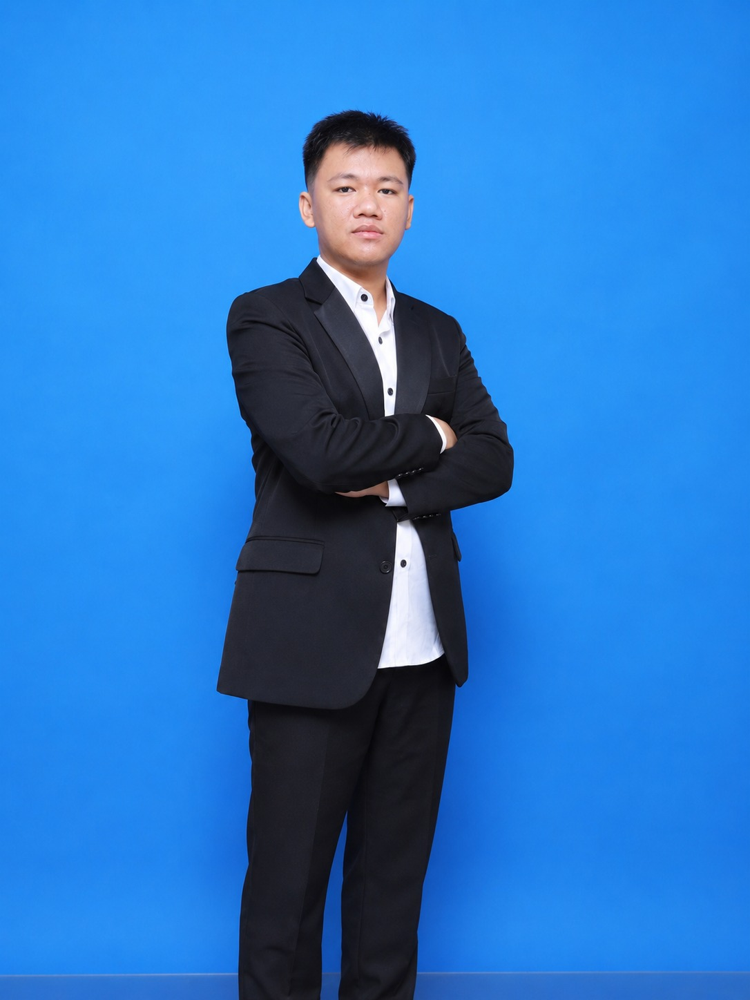

// about
Lulusan S1 Fisika dengan kompetensi di bidang Data Science, Machine Learning, Artificial Intelligence, dan Internet of Things (IoT). Terampil dalam Python, analisis data, pengembangan model machine learning, dan implementasi sistem IoT melalui berbagai proyek. Memiliki semangat belajar tinggi, kemampuan analitis, dan siap berkontribusi di lingkungan kerja yang inovatif.

Saya memulai perjalanan di dunia data dari sisi analisis — membaca angka, membangun dashboard, dan mencari pola yang bisa dijelaskan ke orang lain. Dari situ saya bergerak ke data science untuk membangun model prediktif, lalu ke ML engineering untuk membawa model tersebut keluar dari notebook dan berjalan sebagai sistem nyata.
Saat ini saya sedang memperdalam sisi AI engineering — merancang aplikasi yang memanfaatkan large language model untuk menyelesaikan masalah spesifik, seperti PhysicsGPT, asisten belajar fisika berbasis AI.
Yang saya cari dalam setiap project bukan sekadar model yang akurat, tapi sistem yang benar-benar bisa dipakai — dari dashboard yang dibaca tim bisnis, sampai API yang dipanggil aplikasi lain.
Pengalaman kerja dan kontribusi volunteer, termasuk magang di CV. Rizz Smart Energy dan kolaborasi IoT bersama Impact Center Boja, ada di halaman Experience.